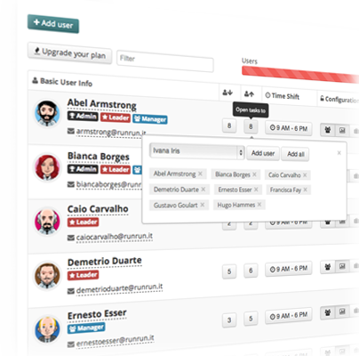

Meet kanban-task-gen
We simplify task management within your team and make it easier to generate, print and put it at your walls!
Create post-it notes with ease
You create as many post-its as you wish, assign them to any number of specialities, identify release/sprint numbers and ETA. This way, you keep your kanban organaside. Create your free account!
